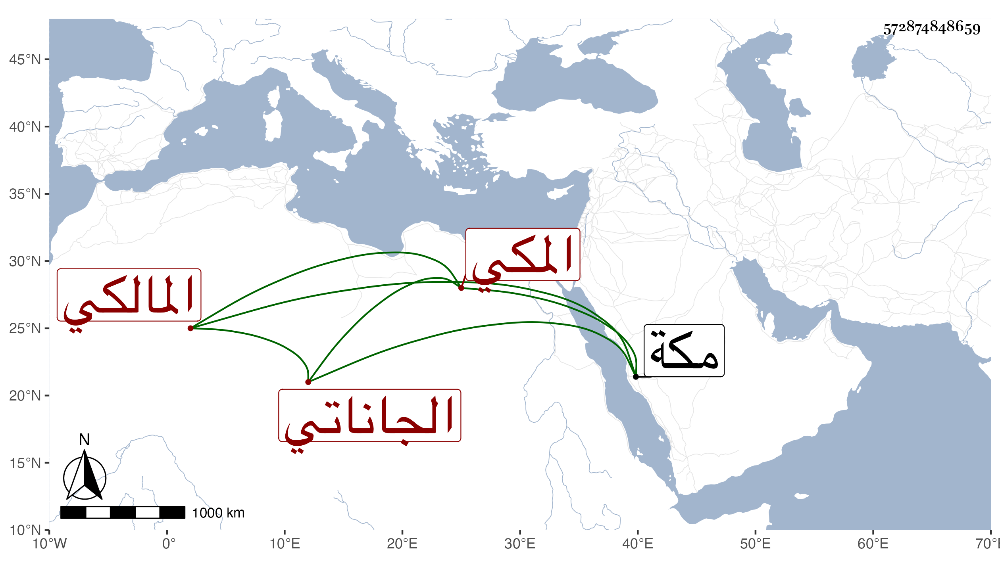

0902Sakhawi.DawLamic.ITO20230111-ara1.EIS1600.572874848659
Biography ID: 572874848659
414
عبد الرحمن بن يعقوب بن محمد بن علي بن عبد الله الجاناتي بالجيم والنون والفوقانية المكي المالكي سبط العفيف اليافعي وأخو محمد الآتي . سمع من أبي حامد المطري وأبي الحسن علي بن مسعود بن عبد المعطي وابن الجزري والزين المراغي ومن مسموعه عليه كتاب الأربعين التي خرجها له شيخنا ، وقاسم التنملي ومن مسموعه عليه مشيخته تخريج الاقفهسي في آخرين ، وأجاز له في استدعاء مؤرخ بذي الحجة سنة خمس وثمانمائة ابن صديق والعراقي والهيثمي وعائشة ابنة ابن عبد الهادي وأبو اليسر بن الصائغ والجوهري والشرف ابن الكويك وخلق أكثر من مائة وعشرين نفسا ، أجاز لي وكان لا يخبر أحدا بمولده فيما أخبرني به صاحبنا ابن فهد قال وما علمت له اشتغالا ، وقال لي غيره إنه كان بارعا في التفصيل ويعرف كم يجيء الرطل اللحم كبة . مات بمكة في ربيع الآخر سنة ثلاث وستين .
